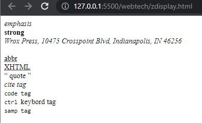

Phrase Elements
-
The content of an < em > element is intended to be a point of emphasis in your document, and it is usually
displayed in italicized text.
- The < strong > element is intended to show strong emphasis for its content.
- Many documents need to contain a snail - mail address, and there is a special < address > element that is
used to contain addresses.
- You can indicate when you are using an abbreviated form by placing the abbreviation between opening
< abbr > and closing < /abbr > tags.
- The < acronym > element allows you to indicate that the text between opening < acronym > and closing
< /acronym > tags is an acronym.
- The < q > element is intended to be used when you want to add a quote within a sentence.
- If you are quoting a text, you can indicate the source by placing it between an opening < cite > tag and
closing < /cite > tag.
- Any code to appear on a web page should be placed inside a
< code > element.
- The < kbd > tag is used to define keyboard input.
- The < var > tag is used to defines a variable in programming or in a mathematical expression. The content inside is typically displayed in italic.
- The < samp > element indicates sample output from a program, script, or the like. Again, it is mainly used
when documenting programming concepts.
- Example:
< em > emphasis < /em >
< strong > strong < /strong >
< address > Wrox Press, 10475 Crosspoint Blvd, Indianapolis, IN 46256 < /address >
< abbr title=”abbreviations” > abbr < /abbr >
< acronym title=”Extensible Hypertext Markup Language” > XHTML < /acronym >
< q > quote < /q >
< cite > cite tag < /cite >
< code > code tag < /code >
< kbd > ctrl < /kbd > keybord tag
< samp >samp tag< /samp >
- output of given program is:
